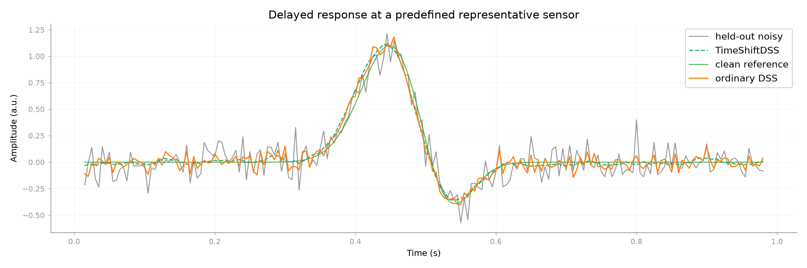
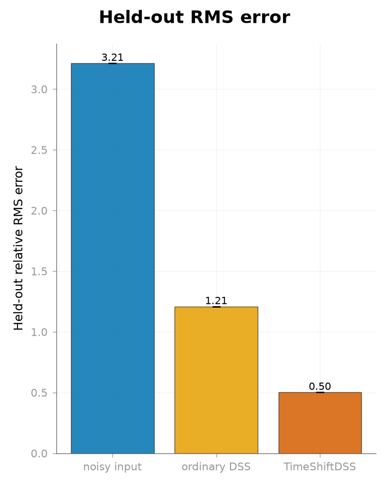

Note
Go to the end to download the full example code.
Recovering delayed reproducible structure with TimeShiftDSS#
When a weak reproducible response reaches sensors with different temporal delays, does lag-augmented TimeShiftDSS recover held-out signal structure better than ordinary static spatial DSS?
TimeShiftDSS augments every sensor with delayed copies, so its decomposition operates in a spatiotemporal space rather than in a single instantaneous sensor topography. The extra dimensions can synthesize useful temporal filtering, but they also increase overfitting risk. This controlled example therefore uses independent held-out trials and a whole-trial circular-shift surrogate [1][2].
References#
Construct repeated trials with sensor-specific response delays#
import numpy as np
from scipy.ndimage import shift
from mne_denoise.dss import DSS, AverageBias, TimeShiftDSS
from mne_denoise.qa import rms_change
from mne_denoise.viz import plot_metric_bars, plot_signal_overlay
sfreq = 200.0
duration = 1.0
n_channels = 7
n_times = int(round(sfreq * duration))
n_train = 80
n_held_out = 40
times = np.arange(n_times) / sfreq
lag_samples = tuple(range(-3, 4))
# The lag grid is fixed from the simulated delay scale before any output is
# inspected. A sensor-specific delay means that one static spatial topography
# cannot represent the response at every time point.
sensor_delays = np.arange(-3, 4)
sensor_amplitudes = np.array([0.70, 1.00, 0.85, 0.65, 1.10, 0.90, 0.75])
waveform = np.exp(-0.5 * ((times - 0.45) / 0.045) ** 2)
waveform -= 0.55 * np.exp(-0.5 * ((times - 0.52) / 0.035) ** 2)
waveform /= np.max(np.abs(waveform))
clean_response = np.vstack(
[
amplitude
* shift(
waveform,
shift=int(delay),
order=0,
mode="constant",
cval=0.0,
prefilter=False,
)
for amplitude, delay in zip(sensor_amplitudes, sensor_delays)
]
)
rng = np.random.default_rng(2010)
train = np.repeat(clean_response[:, :, np.newaxis], n_train, axis=2)
train += 0.75 * rng.standard_normal(train.shape)
clean_held_out = np.repeat(clean_response[:, :, np.newaxis], n_held_out, axis=2)
held_out = clean_held_out + 0.75 * rng.standard_normal(clean_held_out.shape)
Fit ordinary spatial DSS and lag-augmented TimeShiftDSS on training trials#
n_components = 1
n_select = 1
ordinary = DSS(
bias=AverageBias(axis="epochs"),
n_components=n_components,
rank=n_channels,
n_select=n_select,
component_action="retain",
normalize_input=False,
center=False,
verbose=False,
)
ordinary.fit(train)
ordinary_cleaned = ordinary.transform(held_out)
ordinary_rank = n_channels
time_shift = TimeShiftDSS(
lag_samples=lag_samples,
n_components=n_components,
rank=n_channels * len(lag_samples),
n_select=n_select,
component_action="retain",
center=False,
verbose=False,
)
time_shift.fit(train)
time_shift_cleaned = time_shift.transform(held_out)
Evaluate held-out reconstruction, reproducibility, and a surrogate control#
valid = time_shift.valid_slice_
clean_valid = clean_held_out[:, valid, :]
noisy_valid = held_out[:, valid, :]
ordinary_valid = ordinary_cleaned[:, valid, :]
time_shift_valid = time_shift_cleaned[:, valid, :]
noisy_error = rms_change(noisy_valid, clean_valid) / np.sqrt(np.mean(clean_valid**2))
ordinary_error = rms_change(ordinary_valid, clean_valid) / np.sqrt(
np.mean(clean_valid**2)
)
time_shift_error = rms_change(time_shift_valid, clean_valid) / np.sqrt(
np.mean(clean_valid**2)
)
ordinary_residual_ratio = ordinary_error / noisy_error
time_shift_residual_ratio = time_shift_error / noisy_error
ordinary_target_correlation = float(
np.corrcoef(ordinary_valid.ravel(), clean_valid.ravel())[0, 1]
)
time_shift_target_correlation = float(
np.corrcoef(time_shift_valid.ravel(), clean_valid.ravel())[0, 1]
)
ordinary_target_gain = np.dot(ordinary_valid.ravel(), clean_valid.ravel()) / np.dot(
clean_valid.ravel(),
clean_valid.ravel(),
)
time_shift_target_gain = np.dot(time_shift_valid.ravel(), clean_valid.ravel()) / np.dot(
clean_valid.ravel(), clean_valid.ravel()
)
# One circular shift is applied to the whole epoch, preserving its temporal
# and cross-channel structure while destroying alignment across trials.
surrogate_held_out = held_out.copy()
surrogate_rng = np.random.default_rng(20260902)
surrogate_shifts = surrogate_rng.integers(1, n_times, size=n_held_out)
for epoch, shift_amount in enumerate(surrogate_shifts):
surrogate_held_out[:, :, epoch] = np.roll(
held_out[:, :, epoch],
int(shift_amount),
axis=1,
)
held_out_score = time_shift.score(held_out)
surrogate_score = time_shift.score(surrogate_held_out)
feature_observation_ratio = (
time_shift.n_augmented_features_ / time_shift.effective_observations_
)
print("Held-out TimeShiftDSS")
print(f"Channel count: {n_channels}")
print(f"n_times: {n_times}")
print(f"Training trial count: {n_train}")
print(f"Held-out trial count: {n_held_out}")
print(f"lag_samples: {lag_samples}")
print(f"n_components: {n_components}")
print(f"Ordinary DSS rank: {ordinary_rank}")
print(f"TimeShiftDSS rank: {n_channels * len(lag_samples)}")
print(f"n_select: {n_select}")
print(f"n_augmented_features_: {time_shift.n_augmented_features_}")
print(f"effective_observations_: {time_shift.effective_observations_:.1f}")
print(f"positive_weight_observations_: {time_shift.positive_weight_observations_}")
print(f"valid_slice_: {valid}")
print(
f"augmented-features / effective-observations ratio: {feature_observation_ratio:.6f}"
)
print(f"Held-out noisy relative RMS error: {noisy_error:.4f}")
print(f"Held-out ordinary-DSS relative RMS error: {ordinary_error:.4f}")
print(f"Held-out TimeShiftDSS relative RMS error: {time_shift_error:.4f}")
print(f"Ordinary-DSS residual ratio: {ordinary_residual_ratio:.4f}")
print(f"TimeShiftDSS residual ratio: {time_shift_residual_ratio:.4f}")
print(f"Ordinary-DSS target correlation: {ordinary_target_correlation:.4f}")
print(f"TimeShiftDSS target correlation: {time_shift_target_correlation:.4f}")
print(f"Ordinary-DSS target gain: {ordinary_target_gain:.4f}")
print(f"TimeShiftDSS target gain: {time_shift_target_gain:.4f}")
print(f"TimeShiftDSS held-out reproducibility score: {held_out_score:.4f}")
print(f"TimeShiftDSS surrogate reproducibility score: {surrogate_score:.4f}")
Held-out TimeShiftDSS
Channel count: 7
n_times: 200
Training trial count: 80
Held-out trial count: 40
lag_samples: (-3, -2, -1, 0, 1, 2, 3)
n_components: 1
Ordinary DSS rank: 7
TimeShiftDSS rank: 49
n_select: 1
n_augmented_features_: 49
effective_observations_: 15520.0
positive_weight_observations_: 15520
valid_slice_: slice(3, 197, None)
augmented-features / effective-observations ratio: 0.003157
Held-out noisy relative RMS error: 3.2126
Held-out ordinary-DSS relative RMS error: 1.2084
Held-out TimeShiftDSS relative RMS error: 0.5021
Ordinary-DSS residual ratio: 0.3761
TimeShiftDSS residual ratio: 0.1563
Ordinary-DSS target correlation: 0.6119
TimeShiftDSS target correlation: 0.8808
Ordinary-DSS target gain: 0.9666
TimeShiftDSS target gain: 0.9659
TimeShiftDSS held-out reproducibility score: 0.8296
TimeShiftDSS surrogate reproducibility score: 0.0642
Inspect the held-out waveforms#
clean_average = clean_held_out.mean(axis=2)
noisy_average = held_out.mean(axis=2)
ordinary_average = ordinary_cleaned.mean(axis=2)
time_shift_average = time_shift_cleaned.mean(axis=2)
representative_channel = int(
np.argmax(np.sqrt(np.mean(clean_held_out**2, axis=(1, 2))))
)
# The public overlay handles the noisy/TimeShiftDSS/reference traces. Add the
# static DSS comparator to that same axis because it is the central comparison.
waveform_figure = plot_signal_overlay(
noisy_average[representative_channel, valid],
time_shift_average[representative_channel, valid],
times[valid],
scale_after=False,
before_label="held-out noisy",
after_label="TimeShiftDSS",
reference=clean_average[representative_channel, valid],
reference_label="clean reference",
x_label="Time (s)",
y_label="Amplitude (a.u.)",
title="Delayed response at a predefined representative sensor",
show=False,
)
waveform_axis = waveform_figure.axes[0]
waveform_axis.plot(
times[valid],
ordinary_average[representative_channel, valid],
color="tab:orange",
linewidth=1.2,
label="ordinary DSS",
)
waveform_axis.legend(loc="upper right")

<matplotlib.legend.Legend object at 0x7faaf0bde0d0>
Compare held-out reconstruction errors#
plot_metric_bars(
{
"group": np.array(["noisy input", "ordinary DSS", "TimeShiftDSS"]),
"relative_error": np.array([noisy_error, ordinary_error, time_shift_error]),
},
metric_cols=["relative_error"],
metric_labels=["Held-out relative RMS error"],
lower_better=[None],
group_order=["noisy input", "ordinary DSS", "TimeShiftDSS"],
title="Held-out RMS error",
show=False,
)

<Figure size 800x1000 with 1 Axes>
Interpretation#
TimeShiftDSS adds temporal degrees of freedom through delayed sensor copies, which can help when reproducible structure is spatiotemporal rather than instantaneous. The lag grid and rank were fixed from the known simulation dimensions, not selected from the held-out result. The held-out score and whole-trial circular-shift surrogate are therefore part of the scientific interpretation: added lag dimensions can also overfit trial-specific noise.